Tue, Dec 1, 2026, 12:00 HST
Your body's own cannabinoids: CB1, CB2, anandamide and 2-AG
For your review: Fat Nugs piece Post ID MJ01
Carousel, slide by slide

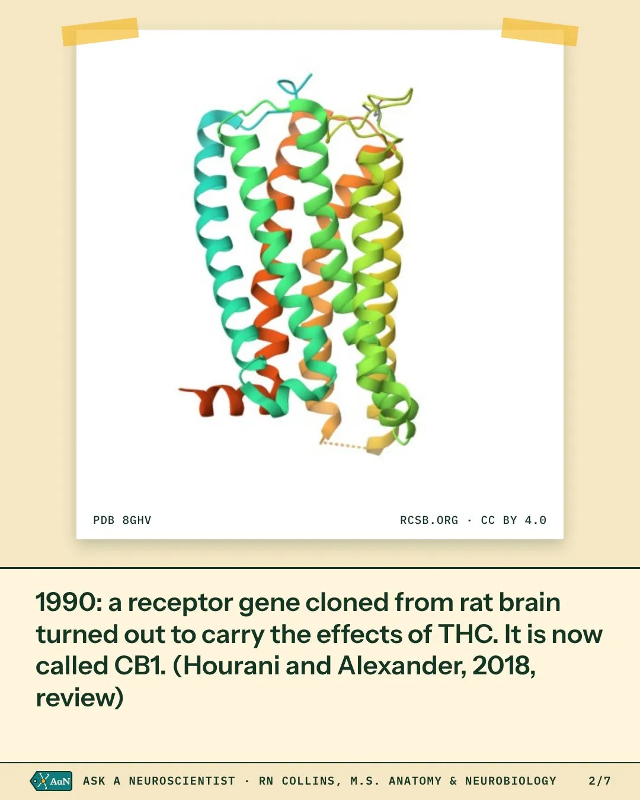
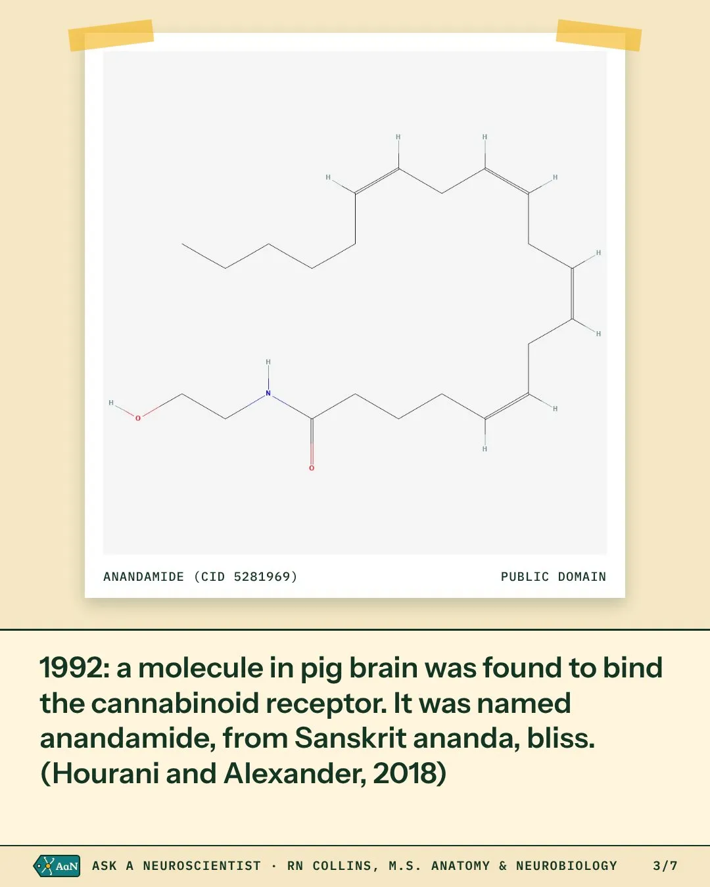

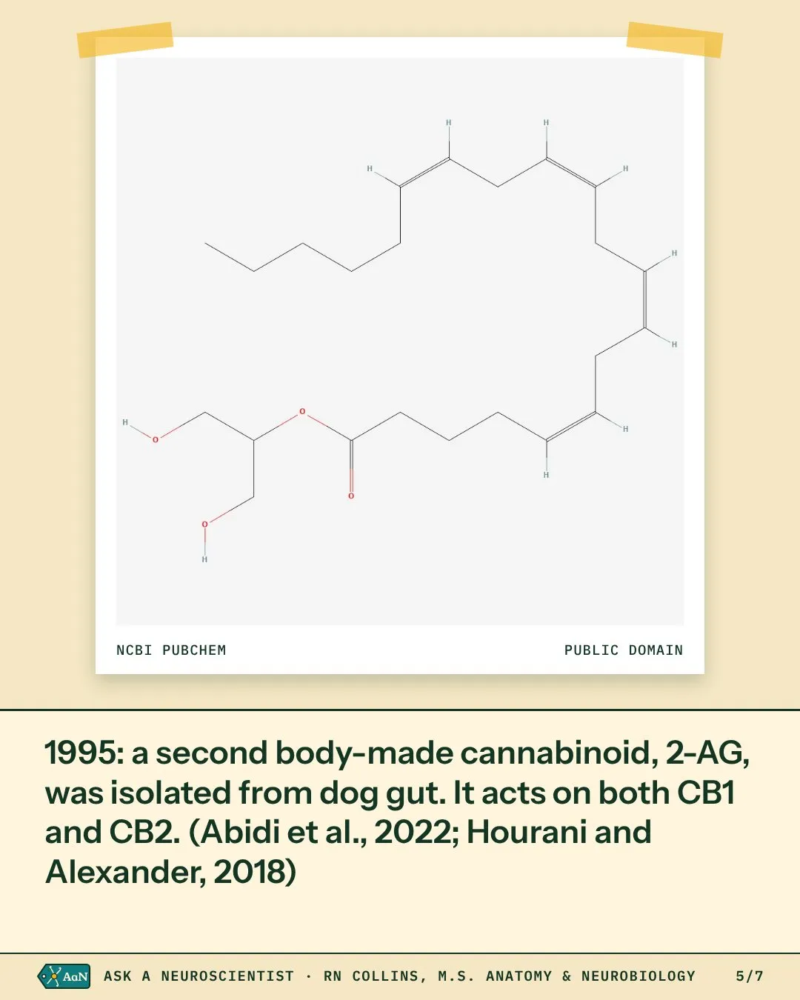
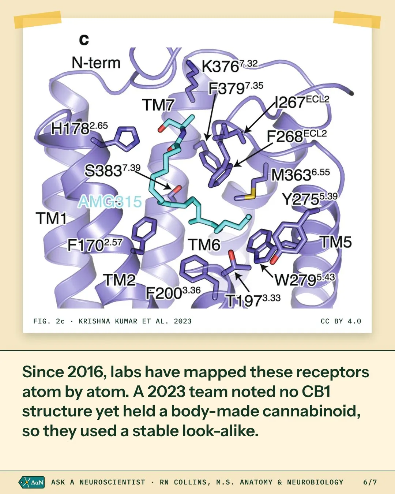
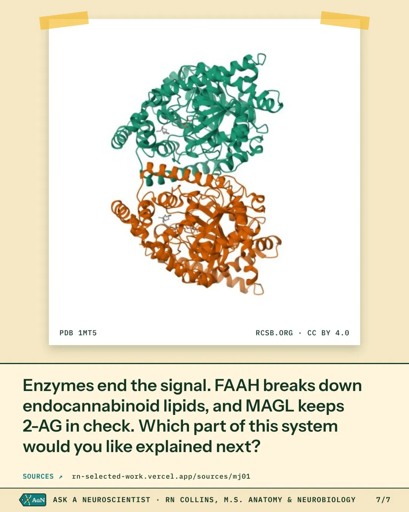
Caption (Instagram, Facebook)
Your body makes its own cannabinoids. This week, MJBizCon in Las Vegas brings the cannabis trade together. Here is the biology underneath it. 1990: a receptor gene cloned from rat brain cortex turned out to carry the effects of THC, the main psychoactive compound in cannabis. It is now called CB1 (Matsuda et al., 1990, as reviewed by Hourani and Alexander, 2018). 1992: a molecule first detected in pig brain was found to bind the receptor. It was named anandamide, from ananda, the Sanskrit word for bliss (Devane et al., 1992, as reviewed by Hourani and Alexander, 2018). 1993: a second receptor, CB2, was identified, first in the spleen and in immune cells, so it was first called the peripheral receptor (Munro et al., 1993, as reviewed by Hourani and Alexander, 2018). 1995: a second body-made cannabinoid, 2-AG, was isolated from dog gut (Mechoulam et al., 1995, as reviewed by Abidi et al., 2022). It acts on both CB1 and CB2. Where they sit now: a 2023 paper calls CB1 the most abundant receptor of its family in the brain (Krishna Kumar et al., Nature Communications). A 2019 paper says CB1 is found throughout the body, while CB2 is mainly in the immune system, with less in the brain (Li et al., Cell). How the signal ends: enzymes break these messengers down. FAAH breaks down endocannabinoid lipids (Bracey et al., 2002, a structure of the rat enzyme). MAGL tightly regulates 2-AG (Labar et al., 2010). What this cannot tell you: receptor maps and structures show where these molecules bind and how. On their own, they do not show what a given compound does in a person. Several early findings came from animal tissue and cell tests. Sources: Hourani and Alexander (2018); Abidi et al. (2022); Shao et al. (2016); Li et al. (2019); Krishna Kumar et al. (2023); Bracey et al. (2002); Labar et al. (2010). Images: Krishna Kumar et al. (2023), Figs. 1a and 2c, cropped, CC BY 4.0; RCSB PDB (RCSB.org), CC BY 4.0; PubChem (public domain). Education, not medical advice. I'm taking on clients for storytelling strategy and content production and operations. DMs are open. #AskANeuro
Pinned first comment
Before this, did you know your own body makes cannabinoids? Every source: rn-selected-work.vercel.app/sources/mj01 Education, not medical advice.
Alt text, per slide
1. Chemical structures of anandamide and 2-AG, the body's own cannabinoids, from Krishna Kumar et al. (2023), with the text: Your body makes its own cannabinoids. Two receptors, CB1 and CB2, pick up their signals. 2. Ribbon model of the human CB1 receptor protein chain from a 2023 cryo-EM structure (PDB 8GHV), with text on the 1990 cloning of CB1 from rat brain. 3. Chemical structure drawing of anandamide: a long fatty chain with four double bonds joined to an ethanolamide head. 4. Ribbon model of the human CB2 receptor protein chain from its first crystal structure (PDB 5ZTY), with text on CB2 being found first in the spleen and immune cells in 1993. 5. Chemical structure drawing of 2-AG: a long fatty chain with four double bonds joined to a glycerol head. 6. Close-up of the CB1 receptor's binding pocket from Krishna Kumar et al. (2023): a stable look-alike of anandamide, in cyan, sits among the receptor's helices. Text on receptor structures since 2016. 7. Ribbon model of the rat enzyme FAAH (PDB 1MT5), which breaks down endocannabinoid lipids, with text on how enzymes end the signal and the question: which part would you like explained next?
Stories
Instagram Stories, posted at the same time. The sticker on each is added in the Instagram app when posting, so it is not part of the image file; it is mocked up here so you can see the finished Story.
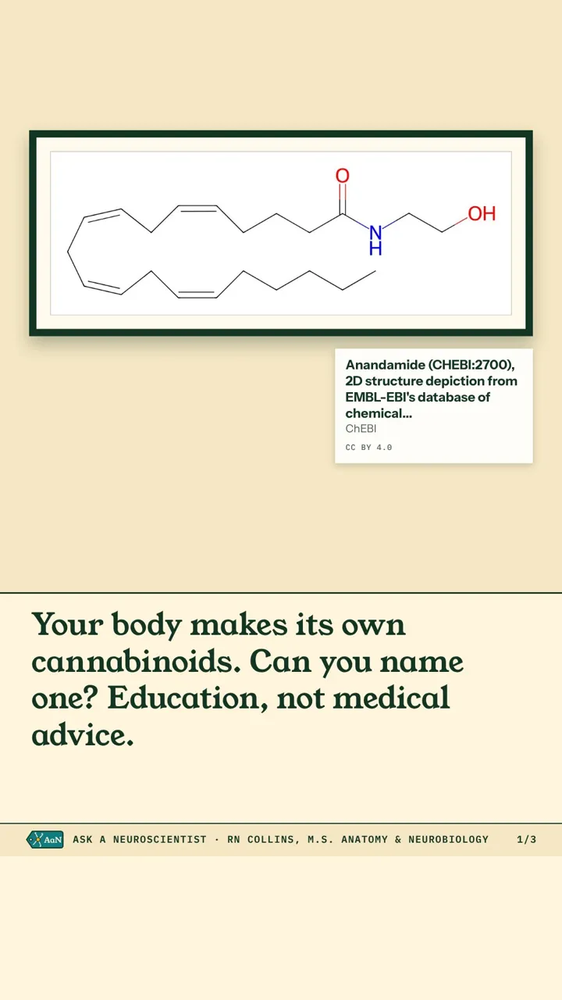
- Anandamide
- Caffeine
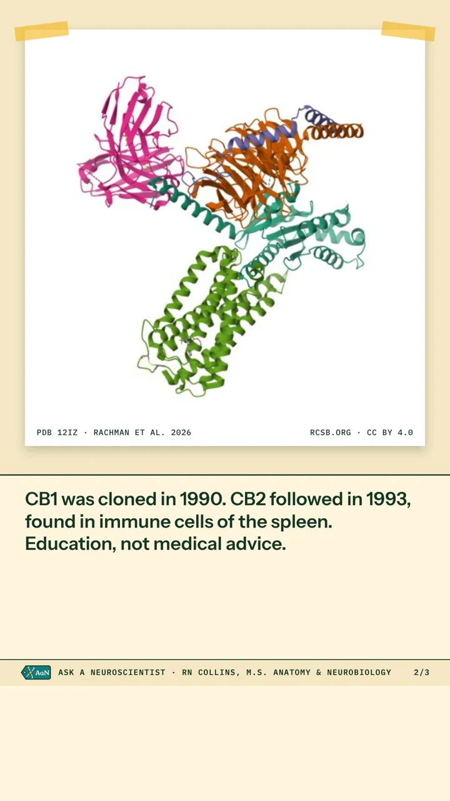
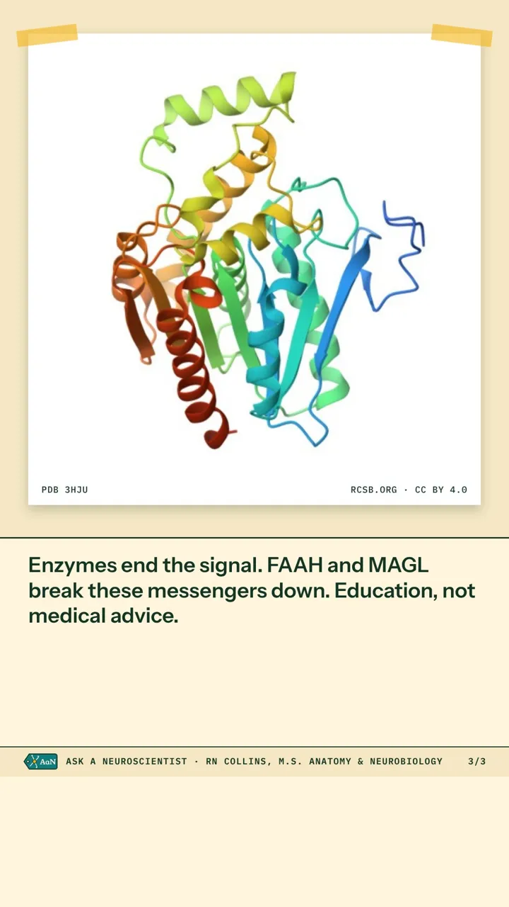
Platform texts
Instagram single
Two receptors, two body-made messengers. CB1 was cloned in 1990 and CB2 in 1993. Anandamide was named in 1992, and 2-AG was isolated in 1995. Both messengers bind cannabinoid receptors. An enzyme called MAGL tightly regulates 2-AG (Labar et al., 2010, ChemBioChem). Sources: Matsuda et al. (1990); Devane et al. (1992); Munro et al. (1993); Mechoulam et al. (1995). Image: human MAGL, PDB 4UUQ, from the RCSB PDB (RCSB.org), CC BY 4.0. Education, not medical advice. I'm taking on clients for storytelling strategy and content production and operations. DMs are open. #AskANeuro
Threads account paused
Your body makes its own cannabinoids. Anandamide was named in 1992 after a team found it in pig brain. 2-AG was isolated from dog intestine in 1995. Both act on cannabinoid receptors: CB1, cloned in 1990, and CB2, cloned in 1993. Today CB1 is described as the most abundant receptor of its family in the brain. Education, not medical advice. #AskANeuro Which of these findings surprised you most?
Threads first reply account paused
Sources: Hourani and Alexander (2018), Brain Neurosci Adv 2, doi 10.1177/2398212818783908. Abidi et al. (2022), Clin Exp Dent Res 8:613. Li et al. (2019), Cell 176. Krishna Kumar et al. (2023), Nature Communications 14. Images: RCSB PDB (RCSB.org), CC BY 4.0. Education, not medical advice. I'm taking on clients for storytelling strategy and content production and operations. DMs are open. All sources: rn-selected-work.vercel.app/sources/mj01
Bluesky
The cannabinoid story in biology starts with a receptor. In 1990 a team cloned CB1 from rat brain, the receptor that carries THC's effects. A 2023 paper calls it the brain's most abundant receptor of its family. Education, not medical advice. #AskANeuro
Bluesky reply
All sources: rn-selected-work.vercel.app/sources/mj01 I'm taking on clients for storytelling strategy and content production and operations. DMs are open.
LinkedIn (my profile)
I'm RN Collins, staff writer and resident neuroscientist at Fat Nugs Magazine. MJBizCon in Las Vegas is this week. Before the business talk, here is the biology. The body makes its own cannabinoids. CB1 was cloned in 1990 and CB2 identified in 1993. Anandamide was named in 1992, and 2-AG was isolated in 1995 (as reviewed by Hourani and Alexander, 2018, and Abidi et al., 2022). A 2023 paper calls CB1 the most abundant receptor of its family in the brain. CB2 is mainly in the immune system. Takeaway for anyone who writes about cannabinoid science: a receptor map shows where a molecule can act. It does not show what a product does in a person. Say when a finding comes from cells or animals. CB1 with an anandamide analog (Krishna Kumar et al., 2023): https://www.rcsb.org/structure/8GHV CB2 structure (Li et al., 2019): https://www.rcsb.org/structure/5ZTY Images: RCSB PDB (RCSB.org), CC BY 4.0. Education, not medical advice. #AskANeuro I'm taking on clients for storytelling strategy and content production and operations. DMs are open.
LinkedIn (Ask a Neuroscientist page)
The body makes its own cannabinoids. MJBizCon in Las Vegas is this week. Before the business talk, here is the biology. CB1 was cloned in 1990 and CB2 identified in 1993. Anandamide was named in 1992, and 2-AG was isolated in 1995 (as reviewed by Hourani and Alexander, 2018, and Abidi et al., 2022). A 2023 paper calls CB1 the most abundant receptor of its family in the brain. CB2 is mainly in the immune system. Takeaway for anyone who writes about cannabinoid science: a receptor map shows where a molecule can act. It does not show what a product does in a person. Say when a finding comes from cells or animals. CB1 with an anandamide analog (Krishna Kumar et al., 2023): https://www.rcsb.org/structure/8GHV CB2 structure (Li et al., 2019): https://www.rcsb.org/structure/5ZTY Images: RCSB PDB (RCSB.org), CC BY 4.0. Education, not medical advice. #AskANeuro I'm taking on clients for storytelling strategy and content production and operations. DMs are open.
TikTok
Not posted on TikTok (drug topic).
Not posted on Pinterest (drug topic).
YouTube Shorts title
Your body makes its own cannabinoids: CB1, CB2, anandamide and 2-AG
YouTube Shorts description
How the body's own cannabinoid system was found: CB1 in 1990, anandamide in 1992, CB2 in 1993 and 2-AG in 1995. Enzymes such as FAAH and MAGL end the signal. Sources: Hourani and Alexander (2018); Abidi et al. (2022); Krishna Kumar et al. (2023). Education, not medical advice. I'm taking on clients for storytelling strategy and content production and operations. DMs are open on Instagram at @ask_a_neuroscientist. #AskANeuro
X X is dropped for both brands; shown for completeness
CB1, the receptor that carries THC's effects, was cloned in 1990. Since 2016, labs have mapped it atom by atom, here with its G protein partners. Education, not medical advice. #AskANeuro
Reel Added Sun Nov 22
A short vertical video (about 40 seconds) for Instagram Reels, YouTube Shorts and Bluesky. The finished Reel is added here on Sun Nov 22, with the brand's animated puffy stickers: a "how sure" label, a source flag, the key number and an arrow. Its frames and the words on screen, in order:
- Your body makes its own cannabinoids. Two receptors, CB1 and CB2, pick up their signals. Here is how lab work since the 1980s found them.4.8 s
- 1990: a receptor gene cloned from rat brain turned out to carry the effects of THC.6.7 s
- 1992: a molecule in pig brain was found to bind the cannabinoid receptor.6.2 s
- 1993: a second receptor, CB2, was found first in the spleen and immune cells, so it was called peripheral.7.2 s
- 1995: a second body-made cannabinoid, 2-AG, was isolated from dog gut.5.8 s
- Since 2016, labs have mapped these receptors atom by atom.5.7 s
- Which part of this system would you like explained next?3.5 s
Sources page
Open the sources page (lab-book design)
For Fat Nugs Magazine to publish online on 2026-12-01
Your Body's Own Cannabinoids: How CB1, CB2, Anandamide and 2-AG Were Found
What the endocannabinoid system is, how a handful of labs found it, and what the evidence says about the bigger claims made in its name.
 A Cannabis sativa plant collected in Falcon Heights, Minnesota, on Aug. 11, 2022, and pressed for the University of Minnesota Herbarium, grown from seed of a feral population. A chemical from this plant, THC, is how scientists first found a receptor system the body already had. Photo: Bell Museum, University of Minnesota, specimen 969499, CC0 1.0.
A Cannabis sativa plant collected in Falcon Heights, Minnesota, on Aug. 11, 2022, and pressed for the University of Minnesota Herbarium, grown from seed of a feral population. A chemical from this plant, THC, is how scientists first found a receptor system the body already had. Photo: Bell Museum, University of Minnesota, specimen 969499, CC0 1.0.
In the mid-1980s, the pharmacologist Allyn Howlett and her lab at St. Louis University were running test-tube experiments with a simple question: did THC, the main mind-altering chemical in cannabis, work by fitting a specific receptor, the way a key fits a lock? The idea was in doubt. In 1975, two researchers had argued that "it is unnecessary to invoke the existence of a specific cannabinoid receptor," because THC could also loosen fatty cell membranes in a general way (Lawrence & Gill, 1975, as quoted in Pertwee, 2006).
Howlett's lab found two clues that changed the field. Its answer, and what came after it, is the story of the endocannabinoid system. The term now travels well beyond the lab, all the way to the claim that people can be "deficient" in it. This week the cannabis trade meets in Las Vegas for MJBizCon, Dec. 1 to 4 at the Las Vegas Convention Center (MJBizCon, 2026). Here is what the science shows, paper by paper, and where the claims run ahead of it. For each finding, this piece says how sure the science is.
A lock nobody was sure existed
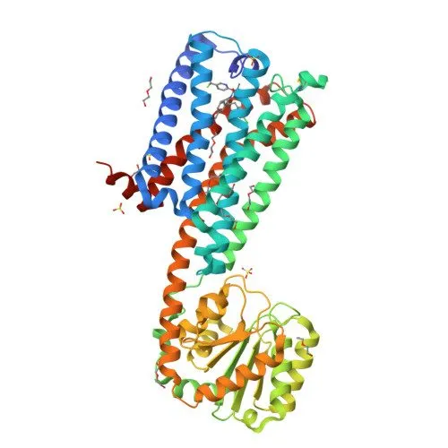
The human CB1 receptor, the lock Howlett's lab first detected in 1988, as a team solved it at near-atomic detail in 2016 (PDB 5U09). The lower lobe is a helper protein (part of an enzyme called GlgA) the team fused on to help the receptor crystallize. Image: RCSB PDB (RCSB.org), from Shao et al. (2016), CC BY 4.0.The first clue was chemical. Howlett's lab showed that mind-altering cannabinoids all slow down one enzyme inside cells, and that they do it through a signaling switch called a G protein (Pertwee, 2006). That pointed to a receptor of a well-known family. The second clue came in 1988, in work with Bill Devane. The team tagged a strong lab-made cannabinoid with a radioactive label and showed that it stuck tightly to specific sites in rat brain tissue. The compounds that bound best were also the ones with the strongest effects in mice. After that, Pertwee writes, "it was now almost certain that cannabinoids acted on a receptor" (Pertwee, 2006; Devane et al., 1988, as reviewed by Howlett & Abood, 2017).
Proof came in 1990. Tom Bonner's lab at the National Institutes of Health cloned the receptor's gene from rat brain (Matsuda et al., 1990, as reviewed by Pertwee, 2006, and Hourani & Alexander, 2018). It was named the cannabinoid receptor because it responds to THC, and today it is called CB1 (Howlett & Abood, 2017). The name tells you how the receptor was found, while saying nothing about what it is for.
The body's own keys
 Anandamide (left), found in pig brain in 1992, and 2-AG (right), found in dog gut in 1995: the two body-made molecules that fit the cannabinoid locks. Both are built from the same fatty acid. Images: PubChem, National Library of Medicine, CIDs 5281969 and 5282280, public domain.
Anandamide (left), found in pig brain in 1992, and 2-AG (right), found in dog gut in 1995: the two body-made molecules that fit the cannabinoid locks. Both are built from the same fatty acid. Images: PubChem, National Library of Medicine, CIDs 5281969 and 5282280, public domain.
A lock in the brain suggested a key made by the body. Devane moved to Jerusalem to work with Raphael Mechoulam, and in 1992 the team pulled a fatty molecule out of pig brain that pushed the tagged compound off its receptor. A few micrograms went to Pertwee's lab in Aberdeen, Scotland, where it acted like other cannabinoids in mouse tissue. The team named it anandamide, from "ananda," the Sanskrit word for bliss (Devane et al., 1992, as reviewed by Pertwee, 2006).
In 1993, Sean Munro's lab in Cambridge, England, found a second receptor, CB2, while searching immune cells (Munro et al., 1993, as reviewed by Howlett & Abood, 2017). It was first called the "peripheral" receptor, a label the field now considers wrong, since CB1 also works outside the brain and CB2 turns up in it (Hourani & Alexander, 2018). In 1995, two teams reported a second key. Mechoulam's group isolated 2-AG from dog intestine, and a team led by Sugiura described it as a likely partner for the receptor in brain (Mechoulam et al., 1995; Sugiura et al., 1995, as reviewed by Howlett & Abood, 2017, and Abidi et al., 2022). 2-AG fully switches on both receptors, while anandamide only partly does (Hourani & Alexander, 2018). By 1998, researchers were describing the whole set as an "endocannabinoid system" (Di Marzo et al., 1998, as reviewed by Howlett & Abood, 2017).
Today, CB1 is described as "the most abundantly expressed G protein-coupled receptor (GPCR) in the brain" (Krishna Kumar et al., 2023). CB2 "is mainly expressed in the immune system, and to a lesser extent in the CNS" (Li et al., 2019). The founding papers from 1988 to 1995 are behind paywalls, so this piece cites them as open reviews report them.
A message sent backwards
 How the system works at a synapse, the gap between two nerve cells. The receiving cell makes 2-AG, which travels back to CB1 receptors on the sending cell and turns down its release. Enzymes named FAAH and MAGL then break the messengers down. Figure: Zou and Kumar (2018), Fig. 1, International Journal of Molecular Sciences, CC BY 4.0.
How the system works at a synapse, the gap between two nerve cells. The receiving cell makes 2-AG, which travels back to CB1 receptors on the sending cell and turns down its release. Enzymes named FAAH and MAGL then break the messengers down. Figure: Zou and Kumar (2018), Fig. 1, International Journal of Molecular Sciences, CC BY 4.0.
Its best-studied job is in the brain, and it runs backwards, because most nerve signals flow in only one direction, from a sending cell to a receiving cell. In 2001, three labs showed that busy receiving cells answer back with endocannabinoids, which briefly quiet the cells that feed them (Lu & Mackie, 2016; Castillo et al., 2012). This backwards signal is now "the principal mode" by which endocannabinoids shape the strength of connections in the brain (Castillo et al., 2012). Several reviews agree on it, and it rests on decades of animal and cell work.
Three details matter for what comes later. First, these molecules are made on demand from the cell's own membrane fats rather than stored in advance. Second, the brain holds about 1,000 times more 2-AG than anandamide at rest (Zou & Kumar, 2018). Third, the signal is brief: body-made cannabinoids act in a precise place for "seconds or less." Plant or lab compounds act wherever they reach the receptor, for "minutes or longer" (Lu & Mackie, 2021). Enzymes then clear the signal, as FAAH breaks down anandamide and MAGL breaks down most 2-AG (Pertwee, 2006).
The deficiency idea
 The finding Ethan Russo called "perhaps the strongest evidence" for his theory: lower anandamide in the spinal fluid of 15 people with chronic migraine than in 20 controls, from a 2007 study. Figure: Russo (2016), Fig. 2, adapted from Sarchielli et al. (2007), Cannabis and Cannabinoid Research, CC BY 4.0.
The finding Ethan Russo called "perhaps the strongest evidence" for his theory: lower anandamide in the spinal fluid of 15 people with chronic migraine than in 20 controls, from a 2007 study. Figure: Russo (2016), Fig. 2, adapted from Sarchielli et al. (2007), Cannabis and Cannabinoid Research, CC BY 4.0.
In 2001, Ethan Russo proposed "clinical endocannabinoid deficiency." The idea was that some people have too little endocannabinoid "tone," and that this low tone could cause migraine, fibromyalgia and irritable bowel syndrome. Russo pointed out that the three often occur together and that none of them shows clear tissue damage on standard tests. Russo's 2016 update states that at first "objective proof and formal clinical trial data were lacking" (Russo, 2016).
His best support came from a 2007 study of spinal fluid, which found less anandamide in 15 people with chronic migraine than in 20 people without it (Sarchielli et al., 2007, as reported by Russo, 2016). Russo also warned that "contradictory findings are not only possible but also common," and noted that endocannabinoid levels "have not been systematically examined" in irritable bowel syndrome (Russo, 2016). Taken together, the deficiency idea remains a hypothesis that is still being tested.
What larger tests found
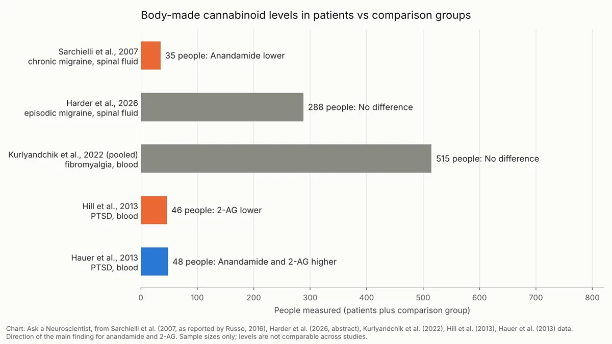
Five tests of the deficiency idea, sized by how many people were measured and coloured by what they found. The largest found no difference. Chart: Ask a Neuroscientist, from Sarchielli et al. (2007, as reported by Russo, 2016), Harder et al. (2026), Kurlyandchik et al. (2022), Hill et al. (2013) and Hauer et al. (2013) data.Larger studies have not supported the simple version of the theory. A 2026 study measured spinal fluid in 194 people with episodic migraine and 94 healthy volunteers, with sampling done the same way for everyone. It found no difference in anandamide or 2-AG, and concluded these levels "may not serve as effective biomarkers" for migraine (Harder et al., 2026, abstract only; the full paper was not openly available). Note that the 2007 study looked at chronic migraine and this one at episodic migraine, so they are not exact repeats.
For fibromyalgia, a 2022 review pooled three studies with 230 patients and 285 controls. It found no difference in blood anandamide or 2-AG. Some related fats were higher, which the authors called "contrary to the endocannabinoid deficiency theory" (Kurlyandchik et al., 2022). For post-traumatic stress disorder (PTSD), results point both ways. One study of 46 people near the World Trade Center on 9/11 found lower 2-AG in those with PTSD (Hill et al., 2013). Another, of 48 people in Germany, mostly recruited through the University of Konstanz, found higher anandamide and 2-AG (Hauer et al., 2013).
Part of the problem is the measurement itself, since blood levels rise and fall with the time of day, exercise, food, stress and how long a sample sits before it is processed. A review by Cecilia Hillard warns that these factors make blood levels "difficult to use ... in isolation as a biomarker," and that brain and blood levels are not linked "in a straightforward manner" (Hillard, 2018). The treatment evidence is also limited. A Cochrane review of cannabinoid medicines for fibromyalgia found only two small trials, both of one synthetic cannabinoid, with 72 people in total, and rated the evidence "very low" (Walitt et al., 2016).
Claims you will hear, checked
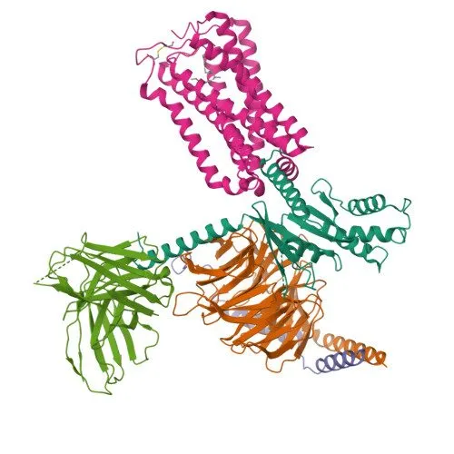
CB1 (top) bound to its G protein partner, solved in 2023 with a stable lab-made copy of anandamide, because no structure yet held the body's own molecule. Image: RCSB PDB (RCSB.org), PDB 8GHV, from Krishna Kumar et al. (2023), CC BY 4.0."The system exists because of cannabis." The receptor is named after the plant only because THC led scientists to it (Howlett & Abood, 2017). The system itself is old. CB1 and CB2-type receptors arose in a common ancestor of today's chordates, the group that includes fish, birds and people, and they are absent from insects (Elphick, 2012).
"Anandamide is your bliss molecule, the cause of a runner's high." The name is a 1992 reference to the Sanskrit word for bliss, not a measured effect. A widely cited 2015 study found that wheel running raised blood anandamide and lowered anxiety and pain in mice through cannabinoid receptors. Its authors note that euphoria "cannot be studied in mouse models" (Fuss et al., 2015).
"This compound supports your endocannabinoid system." Binding a receptor in a dish shows where a molecule can act, not what it does in a person. Even the receptor's shape with a true body-made cannabinoid in it was missing until recently. A 2023 team found that "no structure of CB1 bound to an eCB is available," so they used a stable look-alike (Krishna Kumar et al., 2023). For cannabidiol (CBD), one review states that "the molecular target(s) of CBD remain to be elucidated" (Lu & Mackie, 2021).
"Tuning the system is harmless." A drug that blocked CB1, rimonabant, reached the market as an anti-obesity drug and was then withdrawn because of psychiatric side effects (Zou & Kumar, 2018). The episode shows that the system matters for mood, which is a reason for caution in both directions.
Where this column runs
References
- Abidi, A. H., Alghamdi, S. S., & Derefinko, K. (2022). A critical review of cannabis in medicine and dentistry: A look back and the path forward. Clinical and Experimental Dental Research, 8(3), 613-631. https://doi.org/10.1002/cre2.564
- Castillo, P. E., Younts, T. J., Chávez, A. E., & Hashimotodani, Y. (2012). Endocannabinoid signaling and synaptic function. Neuron, 76(1), 70-81. https://doi.org/10.1016/j.neuron.2012.09.020
- Devane, W. A., Dysarz, F. A., Johnson, M. R., Melvin, L. S., & Howlett, A. C. (1988). Determination and characterization of a cannabinoid receptor in rat brain. Molecular Pharmacology, 34(5), 605-613. PMID 2848184. (Not openly available; cited as reviewed by Pertwee, 2006, and Howlett & Abood, 2017.)
- Devane, W. A., Hanuš, L., Breuer, A., Pertwee, R. G., Stevenson, L. A., Griffin, G., Gibson, D., Mandelbaum, A., Etinger, A., & Mechoulam, R. (1992). Isolation and structure of a brain constituent that binds to the cannabinoid receptor. Science, 258(5090), 1946-1949. https://doi.org/10.1126/science.1470919 (Not openly available; cited as reviewed by Pertwee, 2006.)
- Di Marzo, V., Melck, D., Bisogno, T., & De Petrocellis, L. (1998). Endocannabinoids: Endogenous cannabinoid receptor ligands with neuromodulatory action. Trends in Neurosciences, 21(12), 521-528. https://doi.org/10.1016/s0166-2236(98)01283-1 (Cited as reviewed by Howlett & Abood, 2017.)
- Elphick, M. R. (2012). The evolution and comparative neurobiology of endocannabinoid signalling. Philosophical Transactions of the Royal Society B, 367(1607), 3201-3215. https://doi.org/10.1098/rstb.2011.0394
- Fuss, J., Steinle, J., Bindila, L., Auer, M. K., Kirchherr, H., Lutz, B., & Gass, P. (2015). A runner's high depends on cannabinoid receptors in mice. Proceedings of the National Academy of Sciences, 112(42), 13105-13108. https://doi.org/10.1073/pnas.1514996112
- Harder, A. V. E., Di, X., Winter, W. M., He, B., Van Dongen, R. M., Onderwater, G. L. J., Van Zwet, E. W., Krekels, E. H. J., Kohler, I., Ferrari, M. D., Harms, A. C., Van Den Maagdenberg, A. M. J. M., Hankemeier, T., & Terwindt, G. M. (2026). Endocannabinoid cerebrospinal fluid levels in migraine and its relation to symptoms of depression. Cephalalgia, 46(7). https://doi.org/10.1177/03331024261451250 (Abstract only.)
- Hauer, D., Schelling, G., Gola, H., Campolongo, P., Morath, J., Roozendaal, B., Hamuni, G., Karabatsiakis, A., Atsak, P., Vogeser, M., & Kolassa, I.-T. (2013). Plasma concentrations of endocannabinoids and related primary fatty acid amides in patients with post-traumatic stress disorder. PLOS ONE, 8(5), e62741. https://doi.org/10.1371/journal.pone.0062741
- Hill, M. N., Bierer, L. M., Makotkine, I., Golier, J. A., Galea, S., McEwen, B. S., Hillard, C. J., & Yehuda, R. (2013). Reductions in circulating endocannabinoid levels in individuals with post-traumatic stress disorder following exposure to the World Trade Center attacks. Psychoneuroendocrinology, 38(12), 2952-2961. https://doi.org/10.1016/j.psyneuen.2013.08.004
- Hillard, C. J. (2018). Circulating endocannabinoids: From whence do they come and where are they going? Neuropsychopharmacology, 43(1), 155-172. https://doi.org/10.1038/npp.2017.130
- Hourani, W., & Alexander, S. P. H. (2018). Cannabinoid ligands, receptors and enzymes: Pharmacological tools and therapeutic potential. Brain and Neuroscience Advances, 2, 2398212818783908. https://doi.org/10.1177/2398212818783908
- Howlett, A. C., & Abood, M. E. (2017). CB1 and CB2 receptor pharmacology. Advances in Pharmacology, 80, 169-206. https://doi.org/10.1016/bs.apha.2017.03.007
- Krishna Kumar, K., Robertson, M. J., Thadhani, E., Wang, H., Suomivuori, C.-M., Powers, A. S., Ji, L., Nikas, S. P., Dror, R. O., Inoue, A., Makriyannis, A., Skiniotis, G., & Kobilka, B. (2023). Structural basis for activation of CB1 by an endocannabinoid analog. Nature Communications, 14, 2672. https://doi.org/10.1038/s41467-023-37864-4
- Kurlyandchik, I., Lauche, R., Tiralongo, E., Warne, L. N., & Schloss, J. (2022). Plasma and interstitial levels of endocannabinoids and N-acylethanolamines in patients with chronic widespread pain and fibromyalgia: A systematic review and meta-analysis. PAIN Reports, 7(6), e1045. https://doi.org/10.1097/PR9.0000000000001045
- Li, X., Hua, T., Vemuri, K., Ho, J.-H., Wu, Y., Wu, L., Popov, P., Benchama, O., Zvonok, N., Locke, K., Qu, L., Han, G. W., Iyer, M. R., Cinar, R., Coffey, N. J., Wang, J., Wu, M., Katritch, V., Zhao, S., ... Liu, Z.-J. (2019). Crystal structure of the human cannabinoid receptor CB2. Cell, 176(3), 459-467. https://doi.org/10.1016/j.cell.2018.12.011
- Lu, H.-C., & Mackie, K. (2016). An introduction to the endogenous cannabinoid system. Biological Psychiatry, 79(7), 516-525. https://doi.org/10.1016/j.biopsych.2015.07.028
- Lu, H.-C., & Mackie, K. (2021). Review of the endocannabinoid system. Biological Psychiatry: Cognitive Neuroscience and Neuroimaging, 6(6), 607-615. https://doi.org/10.1016/j.bpsc.2020.07.016
- Matsuda, L. A., Lolait, S. J., Brownstein, M. J., Young, A. C., & Bonner, T. I. (1990). Structure of a cannabinoid receptor and functional expression of the cloned cDNA. Nature, 346(6284), 561-564. https://doi.org/10.1038/346561a0 (Not openly available; cited as reviewed by Pertwee, 2006, and Hourani & Alexander, 2018.)
- Mechoulam, R., Ben-Shabat, S., Hanuš, L., Ligumsky, M., Kaminski, N. E., Schatz, A. R., Gopher, A., Almog, S., Martin, B. R., Compton, D. R., Pertwee, R. G., Griffin, G., Bayewitch, M., Barg, J., & Vogel, Z. (1995). Identification of an endogenous 2-monoglyceride, present in canine gut, that binds to cannabinoid receptors. Biochemical Pharmacology, 50(1), 83-90. https://doi.org/10.1016/0006-2952(95)00109-d (Not openly available; cited as reviewed by Howlett & Abood, 2017, and Abidi et al., 2022.)
- MJBizCon. (2026). MJBizCon 2026: December 1-4, 2026, Las Vegas Convention Center. https://mjbizconference.com/
- Munro, S., Thomas, K. L., & Abu-Shaar, M. (1993). Molecular characterization of a peripheral receptor for cannabinoids. Nature, 365(6441), 61-65. https://doi.org/10.1038/365061a0 (Not openly available; cited as reviewed by Howlett & Abood, 2017.)
- Pertwee, R. G. (2006). Cannabinoid pharmacology: The first 66 years. British Journal of Pharmacology, 147(S1), S163-S171. https://doi.org/10.1038/sj.bjp.0706406
- Russo, E. B. (2016). Clinical endocannabinoid deficiency reconsidered: Current research supports the theory in migraine, fibromyalgia, irritable bowel, and other treatment-resistant syndromes. Cannabis and Cannabinoid Research, 1(1), 154-165. https://doi.org/10.1089/can.2016.0009
- Sarchielli, P., Pini, L. A., Coppola, F., Rossi, C., Baldi, A., Mancini, M. L., & Calabresi, P. (2007). Endocannabinoids in chronic migraine: CSF findings suggest a system failure. Neuropsychopharmacology, 32(6), 1384-1390. https://doi.org/10.1038/sj.npp.1301246 (Not openly available; cited as reported by Russo, 2016.)
- Shao, Z., Yin, J., Chapman, K., Grzemska, M., Clark, L., Wang, J., & Rosenbaum, D. M. (2016). High-resolution crystal structure of the human CB1 cannabinoid receptor. Nature, 540(7634), 602-606. https://doi.org/10.1038/nature20613 (Structure record read at RCSB PDB 5U09.)
- Sugiura, T., Kondo, S., Sukagawa, A., Nakane, S., Shinoda, A., Itoh, K., Yamashita, A., & Waku, K. (1995). 2-Arachidonoylglycerol: A possible endogenous cannabinoid receptor ligand in brain. Biochemical and Biophysical Research Communications, 215(1), 89-97. https://doi.org/10.1006/bbrc.1995.2437 (Not openly available; cited as reviewed by Howlett & Abood, 2017.)
- Walitt, B., Klose, P., Fitzcharles, M.-A., Phillips, T., & Häuser, W. (2016). Cannabinoids for fibromyalgia. Cochrane Database of Systematic Reviews, 2016(7), CD011694. https://doi.org/10.1002/14651858.CD011694.pub2
- Zou, S., & Kumar, U. (2018). Cannabinoid receptors and the endocannabinoid system: Signaling and function in the central nervous system. International Journal of Molecular Sciences, 19(3), 833. https://doi.org/10.3390/ijms19030833
Resources
- IUPHAR/BPS Guide to Pharmacology: cannabinoid receptors: the field's official reference page for CB1 and CB2, kept by the pharmacology society that names receptors.
- RCSB PDB entry 5U09 and entry 8GHV: turn the CB1 structures shown here in 3D in your browser.
- PubChem: anandamide and 2-AG: the National Library of Medicine's records for the two body-made cannabinoids.
- Pertwee (2006), free full text: a first-hand history of the discoveries by one of the scientists who tested anandamide.
- Russo (2016), free full text: the deficiency theory in its author's own words, with his caveats.
- Kurlyandchik et al. (2022), free full text: the pooled fibromyalgia data that did not find a deficiency.
- Hillard (2018), free full text: why a blood test for endocannabinoids is hard to read.
- SAMHSA National Helpline: free, confidential treatment referral and information, 24 hours a day, at 1-800-662-4357.
- 988 Suicide and Crisis Lifeline: call or text 988 for support in a crisis. In an emergency, call 911.
Education, not medical advice.

 No one in this 2021 experiment got CBD. Forty-three adults took an oil with no CBD in it, once told it was CBD-free and once told it was CBD. People who strongly believed CBD eases anxiety (darker dots) reported less anxiety when told it was CBD. Image: Spinella et al. (2021), Psychopharmacology, cropped from Fig. 3 (panels b and c), CC BY 4.0.
No one in this 2021 experiment got CBD. Forty-three adults took an oil with no CBD in it, once told it was CBD-free and once told it was CBD. People who strongly believed CBD eases anxiety (darker dots) reported less anxiety when told it was CBD. Image: Spinella et al. (2021), Psychopharmacology, cropped from Fig. 3 (panels b and c), CC BY 4.0. The FDA commissioner's April 1, 2026 letter, the agency's main CBD action this year. It sets a narrow exception tied to Medicare. Document: US Food and Drug Administration, public domain (US government work).
The FDA commissioner's April 1, 2026 letter, the agency's main CBD action this year. It sets a narrow exception tied to Medicare. Document: US Food and Drug Administration, public domain (US government work). The two sentences that set the date. Section 2019 of Public Law 119-103 delays most of the new federal hemp definition to Dec. 11, 2026. Document: Public Law 119-103, 140 Stat. 1003, via GovInfo, public domain.
The two sentences that set the date. Section 2019 of Public Law 119-103 delays most of the new federal hemp definition to Dec. 11, 2026. Document: Public Law 119-103, 140 Stat. 1003, via GovInfo, public domain. The terpenes that a hemp variety's flowers produce, drawn over the flower itself, from a 2017 study that found the enzymes behind most of them. Limonene and alpha-pinene are the same molecules found in citrus peel and pine resin. Fig. 1, Booth et al. (2017), PLOS ONE, CC BY 4.0.
The terpenes that a hemp variety's flowers produce, drawn over the flower itself, from a 2017 study that found the enzymes behind most of them. Limonene and alpha-pinene are the same molecules found in citrus peel and pine resin. Fig. 1, Booth et al. (2017), PLOS ONE, CC BY 4.0. Samples with more of one sulfur molecule smelled more skunky to a small panel. The two samples with none of it scored zero. Chart: Ask a Neuroscientist, from Oswald et al. (2021) data.
Samples with more of one sulfur molecule smelled more skunky to a small panel. The two samples with none of it scored zero. Chart: Ask a Neuroscientist, from Oswald et al. (2021) data. Left: by genome-wide DNA, samples labeled Sativa and Indica are mixed together. Right: by terpenes and cannabinoids, the labels separate only partly. Cropped from Fig. 1 (panels a and b), Watts et al. (2021), Nature Plants, CC BY 4.0.
Left: by genome-wide DNA, samples labeled Sativa and Indica are mixed together. Right: by terpenes and cannabinoids, the labels separate only partly. Cropped from Fig. 1 (panels a and b), Watts et al. (2021), Nature Plants, CC BY 4.0. A male Cannabis sativa plant collected on Aug. 6, 2023, in an old field near a brick silo in Faribault County, Minnesota, and pressed for the University of Minnesota herbarium. The plant is easy to describe. What it does to human health is still being worked out. Photo: Bell Museum, University of Minnesota, specimen MIN 995584, CC0 1.0.
A male Cannabis sativa plant collected on Aug. 6, 2023, in an old field near a brick silo in Faribault County, Minnesota, and pressed for the University of Minnesota herbarium. The plant is easy to describe. What it does to human health is still being worked out. Photo: Bell Museum, University of Minnesota, specimen MIN 995584, CC0 1.0. The committee's treatment chapter, counted from the report's own list. Only 3 of its 24 conclusions reached the top grades, and 11 sat at the bottom, where the evidence could not settle the question either way. Chart: Ask a Neuroscientist, from NASEM (2017b) data.
The committee's treatment chapter, counted from the report's own list. Only 3 of its 24 conclusions reached the top grades, and 11 sat at the bottom, where the evidence could not settle the question either way. Chart: Ask a Neuroscientist, from NASEM (2017b) data. In 2017, researchers compared the federal research supply with plants tested in four West Coast and Rocky Mountain cities. NIDA's samples, the white bars, held far less THC on average. Image: Vergara et al. (2017), Scientific Reports, cropped from Fig. 1 (panel A), CC BY 4.0.
In 2017, researchers compared the federal research supply with plants tested in four West Coast and Rocky Mountain cities. NIDA's samples, the white bars, held far less THC on average. Image: Vergara et al. (2017), Scientific Reports, cropped from Fig. 1 (panel A), CC BY 4.0. The first federal law written mainly to make cannabis research easier. It set deadlines for the DEA and required a yearly check on whether researchers have enough cannabis. Document: Public Law 117-215, 136 Stat. 2257, via GovInfo, public domain.
The first federal law written mainly to make cannabis research easier. It set deadlines for the DEA and required a yearly check on whether researchers have enough cannabis. Document: Public Law 117-215, 136 Stat. 2257, via GovInfo, public domain. Four years of federal steps on one page, drawn by Congress's own auditors. The last box, the summer 2026 hearing, is where the process still sat in mid-November. Image: US Government Accountability Office (2026), GAO-26-108623, Figure 4, public domain (US government work).
Four years of federal steps on one page, drawn by Congress's own auditors. The last box, the summer 2026 hearing, is where the process still sat in mid-November. Image: US Government Accountability Office (2026), GAO-26-108623, Figure 4, public domain (US government work).

 A three-zone flight east, worked out day by day: Los Angeles to Boston, the same three hours an East Coast visitor recrosses on the way home from Las Vegas. The researchers assume the clock catches up 1 hour a day, so a game two days after landing is played with 2 hours of eastward jet lag. Fig. 1, Leota et al. (2022), Frontiers in Physiology, CC BY 4.0.
A three-zone flight east, worked out day by day: Los Angeles to Boston, the same three hours an East Coast visitor recrosses on the way home from Las Vegas. The researchers assume the clock catches up 1 hour a day, so a game two days after landing is played with 2 hours of eastward jet lag. Fig. 1, Leota et al. (2022), Frontiers in Physiology, CC BY 4.0. The body clock right after landing. Left: 8 hours west, the clock runs ahead of local time. Right: 8 hours east, it runs behind. The wave is core body temperature; black bars are sleep. Fig. 2, Roach and Sargent (2019), Frontiers in Physiology, CC BY 4.0.
The body clock right after landing. Left: 8 hours west, the clock runs ahead of local time. Right: 8 hours east, it runs behind. The wave is core body temperature; black bars are sleep. Fig. 2, Roach and Sargent (2019), Frontiers in Physiology, CC BY 4.0. Two estimates, one pattern: the clock moves later more easily than it moves earlier. Chart: Ask a Neuroscientist, from Aschoff et al. (1975) as reported in Eastman and Burgess (2009), and from Janse van Rensburg et al. (2021).
Two estimates, one pattern: the clock moves later more easily than it moves earlier. Chart: Ask a Neuroscientist, from Aschoff et al. (1975) as reported in Eastman and Burgess (2009), and from Janse van Rensburg et al. (2021). Re-setting after an 8-hour shift. Left: after flying west, daylight pushes the clock one way, later. Right: after flying east, daylight falls on both sides of the body's low point, and the arrows point both ways. Fig. 3, Roach and Sargent (2019), Frontiers in Physiology, CC BY 4.0.
Re-setting after an 8-hour shift. Left: after flying west, daylight pushes the clock one way, later. Right: after flying east, daylight falls on both sides of the body's low point, and the arrows point both ways. Fig. 3, Roach and Sargent (2019), Frontiers in Physiology, CC BY 4.0. How long sleep took to recover after trips of at least 1,000 kilometres, from rings worn by 57,240 people. Chart: Ask a Neuroscientist, from Willoughby et al. (2025) data.
How long sleep took to recover after trips of at least 1,000 kilometres, from rings worn by 57,240 people. Chart: Ask a Neuroscientist, from Willoughby et al. (2025) data. NBA home teams who had just flown home east, with too little time to adjust, won less often and by smaller margins. Ten seasons, 11,481 games. Fig. 2, Leota et al. (2022), Frontiers in Physiology, CC BY 4.0.
NBA home teams who had just flown home east, with too little time to adjust, won less often and by smaller margins. Ten seasons, 11,481 games. Fig. 2, Leota et al. (2022), Frontiers in Physiology, CC BY 4.0. The eastward cost and the cure in one panel. Home teams who flew east but had enough days to adjust played as well as teams who had not travelled; those still jet lagged did worse. Cropped from Fig. 3B, Leota et al. (2022), Frontiers in Physiology, CC BY 4.0.
The eastward cost and the cure in one panel. Home teams who flew east but had enough days to adjust played as well as teams who had not travelled; those still jet lagged did worse. Cropped from Fig. 3B, Leota et al. (2022), Frontiers in Physiology, CC BY 4.0.
 In Fribourg, Switzerland, 45 young adults slept two lab nights exactly a week apart. On the first, they took about six minutes longer to fall asleep and slept about 13 minutes less. Chart: Ask a Neuroscientist, from Wick et al. (2024) data.
In Fribourg, Switzerland, 45 young adults slept two lab nights exactly a week apart. On the first, they took about six minutes longer to fall asleep and slept about 13 minutes less. Chart: Ask a Neuroscientist, from Wick et al. (2024) data.


 In a University College London study, 50 adults repeated sentences heard through background babble. The pupil widened more when speech was harder to make out, and more for people listening in their second language. Borghini and Hazan (2018), Frontiers in Neuroscience, Fig. 2, CC BY.
In a University College London study, 50 adults repeated sentences heard through background babble. The pupil widened more when speech was harder to make out, and more for people listening in their second language. Borghini and Hazan (2018), Frontiers in Neuroscience, Fig. 2, CC BY. A simulated judge with no fatigue at all, who avoids starting a long case just before a break, still shows a falling line. Glöckner (2016), Judgment and Decision Making, cropped from Fig. 2, CC BY 3.0.
A simulated judge with no fatigue at all, who avoids starting a long case just before a break, still shows a falling line. Glöckner (2016), Judgment and Decision Making, cropped from Fig. 2, CC BY 3.0.